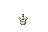

Vertebra candidate

Approved Cockatrice Eye

48×32 transparent canvas. Bone fitted to 10×11 pixels, comparable to the approved eye's 11×10. Native size and 10× zoom.

Built-in imagegen; prompt and user-supplied reference URL. Art candidate only, not installed.